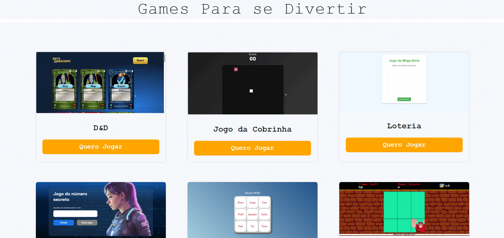

Sobre mim
O meu nome é Felype Dantas Dos Santos, tenho 20 anos e estou no meu quinto semestre do curso de análise e desenvolvimento de sistemas na Fatec Zona Leste, aprendo sobre front-end pelo Youtube e pelos cursos da Alura e da DIO.
Sobre outros conhecimentos,
fiz curso técnico de administração na ETEC,
e outros diversos cursos
de forma livre e online em escolas virtuais gratuitas, como o fundação Bradesco e o portal do Senai, a qual também fiz um curso pago e presencial de informática básica.
Estou sempre buscando aprender novas habilidades e conhecimentos através de projetos.

Um exemplo seria o Mixa Games, projeto que desenvolvi durante o bootcamp da DIO de Front-End do zero com a Ri.